Before we touch a laptop, I want to give you everything I've figured out so far. Six lessons. Then we set yours up together.
The whole idea is this. AI should make you better at the thing you already do. Hindi siya papalit sa'yo.
Ask the room: what do you already know better than most people?
POST205 · CRASH COURSE
AI should make you better at the thing you already do.
When I run a command, I don't skip to the answer. I read what the model was thinking on the way there. Line by line. Like a psychopath.
And I did that because I wanted to know how it actually works.
So if you're asking what you need to start, it's not a technical background. It's curiosity. If you want to know how the thing works, and you're willing to poke at it, you can do this.
Where I'm coming from
I read the thinking.
There are really only two reasons people get into this.
One. You start your own thing. You build with AI, you find clients, you sell what you build. That's the door I went through.
Two. You become the AI person where you already work. Same skills, pointed inward.
Me, I came in through systems and automation. Then AI started automating faster than I could build the systems by hand.
Ask: which door are you walking through?
Lesson 01Why you're here
Two reasons people get into this.
Here's the problem. Everyone is offering AI services now. It's getting noisy. Hard to know who to follow, and harder to stand out, because you're competing with people running the exact same demo.
So where's the edge? It's not the AI. An accountant who's actually audited real books knows what a good budget looks like. She knows the five places people get it wrong. The model doesn't know that.
Which is why this is a good moment if you've got tenure. You already know how to decide. That's the expensive part.
Lesson 01Why you're here
Everyone is offering AI services now.
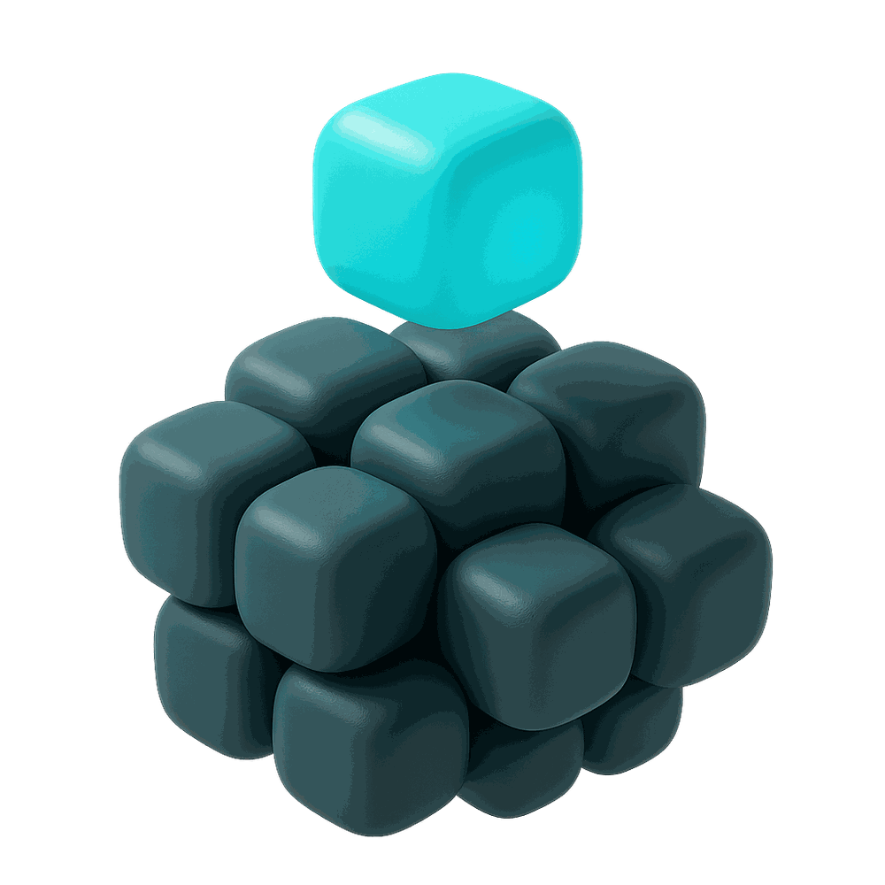
One more thing from me. I stopped writing proposals.
I just build the thing, show it to them, and ask if they want to pay for it.
It's a lot easier than explaining what I would have built.
Bridge: so if the work sells itself, what tool you used stops mattering.
Lesson 01Why you're here
I stopped writing proposals. I just build the thing.
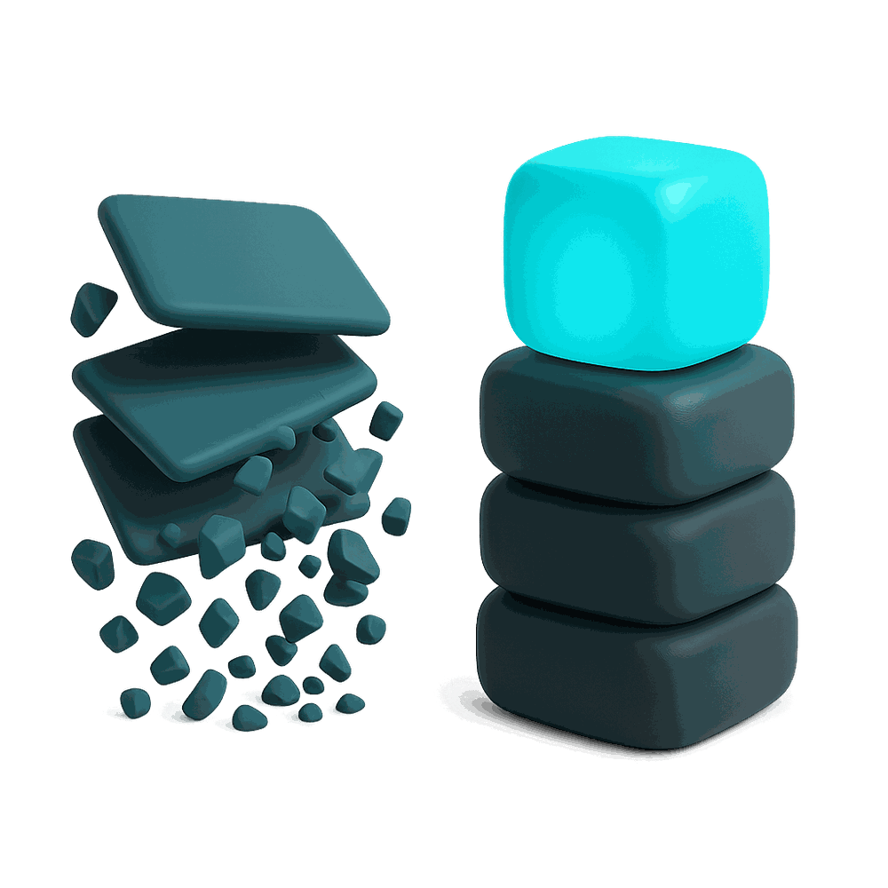
Lesson two. Tools don't matter.
And I'm saying that as somebody who is addicted to Claude Code. I use it every day.
But what actually carried over from every system I've ever wired together was never the platform. It was learning what an API call is. It was learning how to read an error instead of panicking at it.
That's why I know what to watch out for now.
Lesson 02Tools
Tools don't matter.
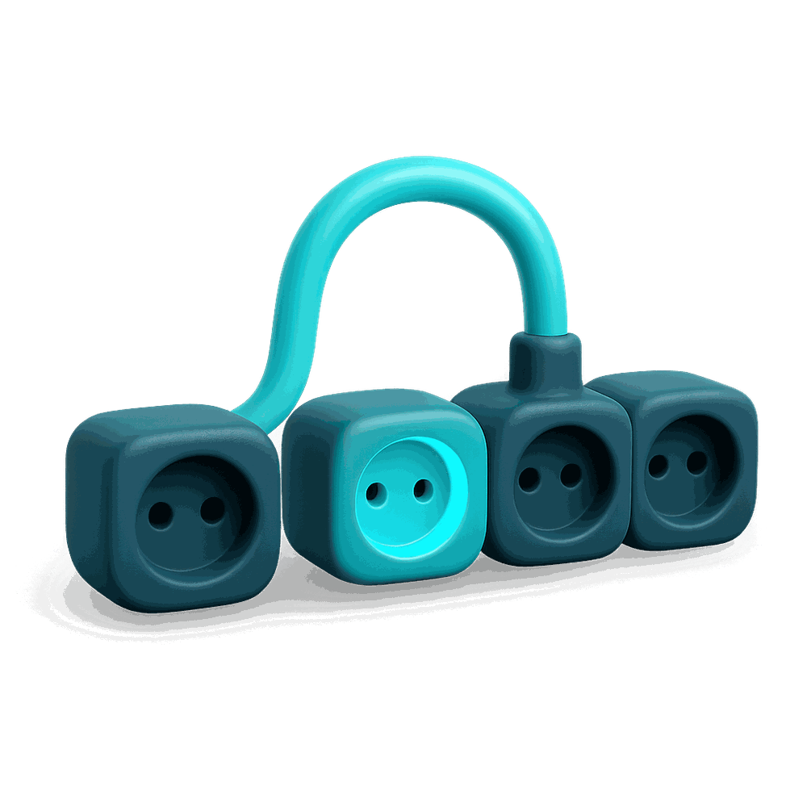
Real example. When Claude Code goes down, I switch to Codex and keep working.
Same context, same files. I never re-brief anybody.
Because everything the AI needs to know about me and my business is written down in one place, in plain files that I own.
So you stop waiting for the perfect tool. And you stop panicking when your favorite one gets replaced. Because it will.
Bridge: so if the tool is replaceable, what actually makes the difference?
Lesson 02Tools
When Claude Code goes down I switch to Codex.
Lesson three. What does it actually mean to be AI native?
It's not how much you know. It's what you reach for first.
Something lands on your desk. Your first move is either try AI on it, or do it the way you've always done it. Pause. That's the whole difference.
Lesson 03Being AI native
Being AI native is what you reach for first.
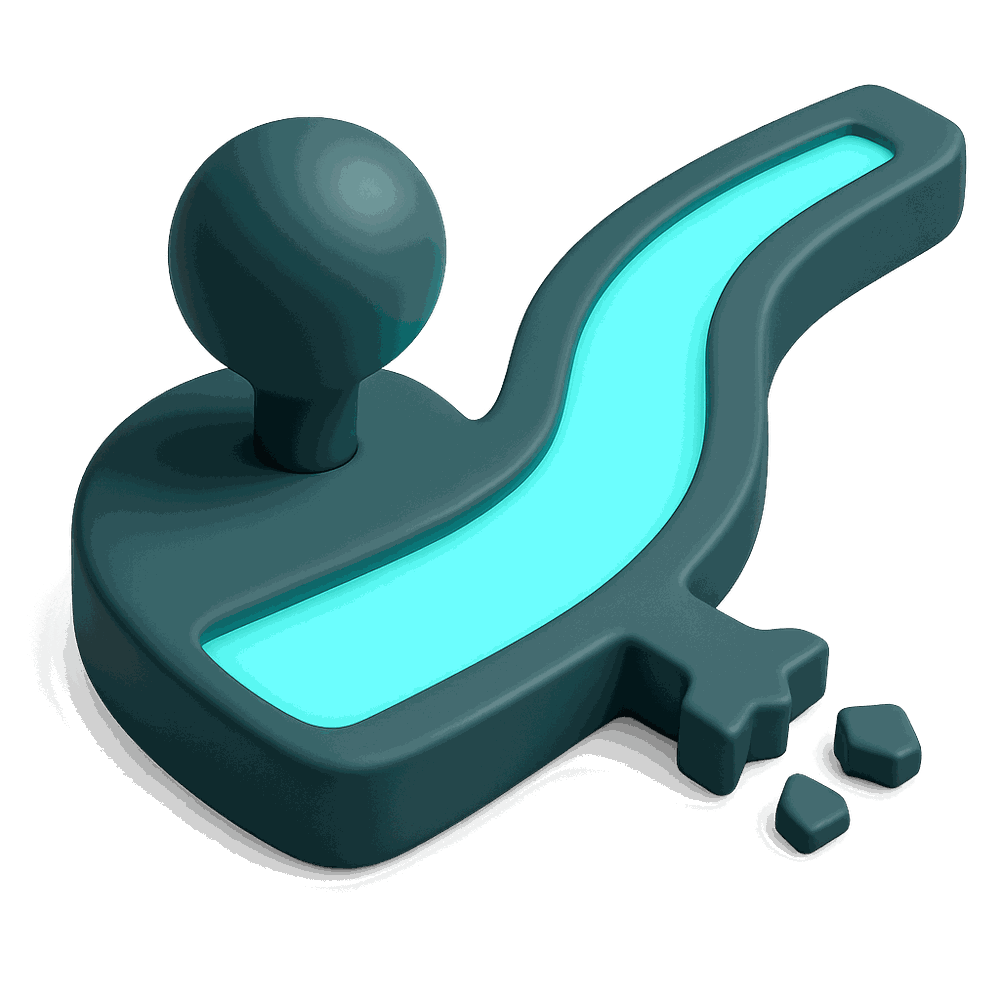
And the question itself changed.
We used to ask, can AI do this? That's a yes or no, and usually you answer it from memory, based on something you tried a year ago.
Now I ask, to what extent can AI do this. If it handles 75 percent, that's a win. If it only handles 9 percent, still a win. You're already ahead of the guy doing all of it by hand.
And remember, these tools are the worst they will ever be. Whatever it couldn't do last quarter, try it again this month.
Bridge: which brings me to the part people get wrong.
Lesson 03Being AI native
The question changed.
We used to ask
Can AI do this?
Now I ask
To what extent can AI do this?
Lesson four, and this one's important. AI isn't the valuable part.
Everybody assumes the prize goes to whoever has the best prompt, the newest model, the fanciest skills. But any of us can open Opus 5 this afternoon.
Pause. Ask it out loud. So why don't we all get the same results?
Because everyone brings a different brain to it.
Lesson 04AI isn't the valuable part
We are all using the same model.
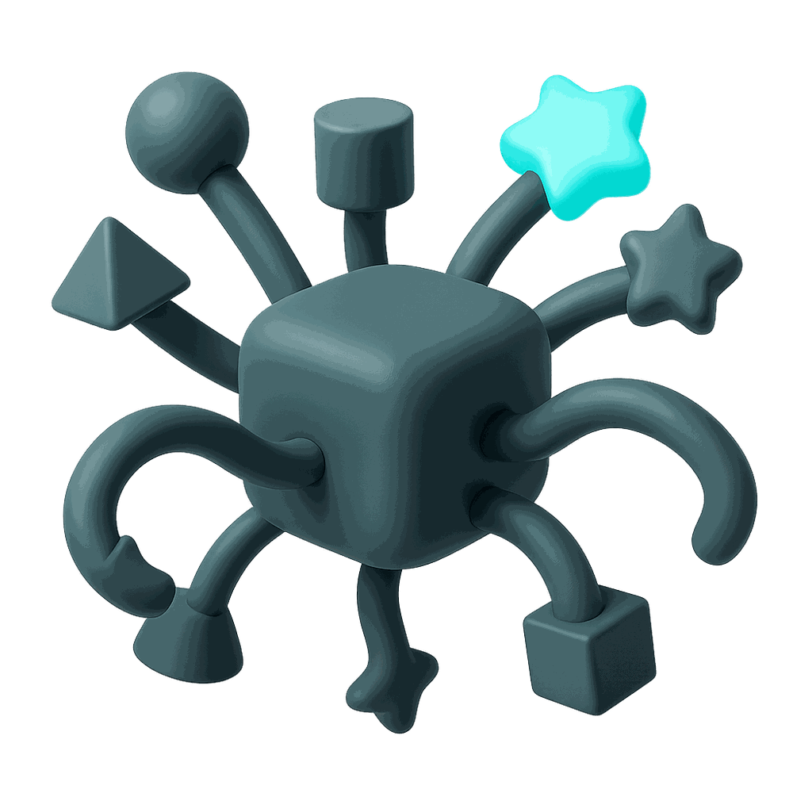
Here's my proof. For six months, I've been teaching my AI my mistakes.
Every day it audits what I did. The next day it levels up from what it found.
So the more I got wrong, the more there was to teach it.
Now my machine knows how a website build goes wrong. What breaks in a back-office system. Which guardrails to put up. What I always forget on security and privacy.
Lesson 04AI isn't the valuable part
Six months of teaching it my mistakes.
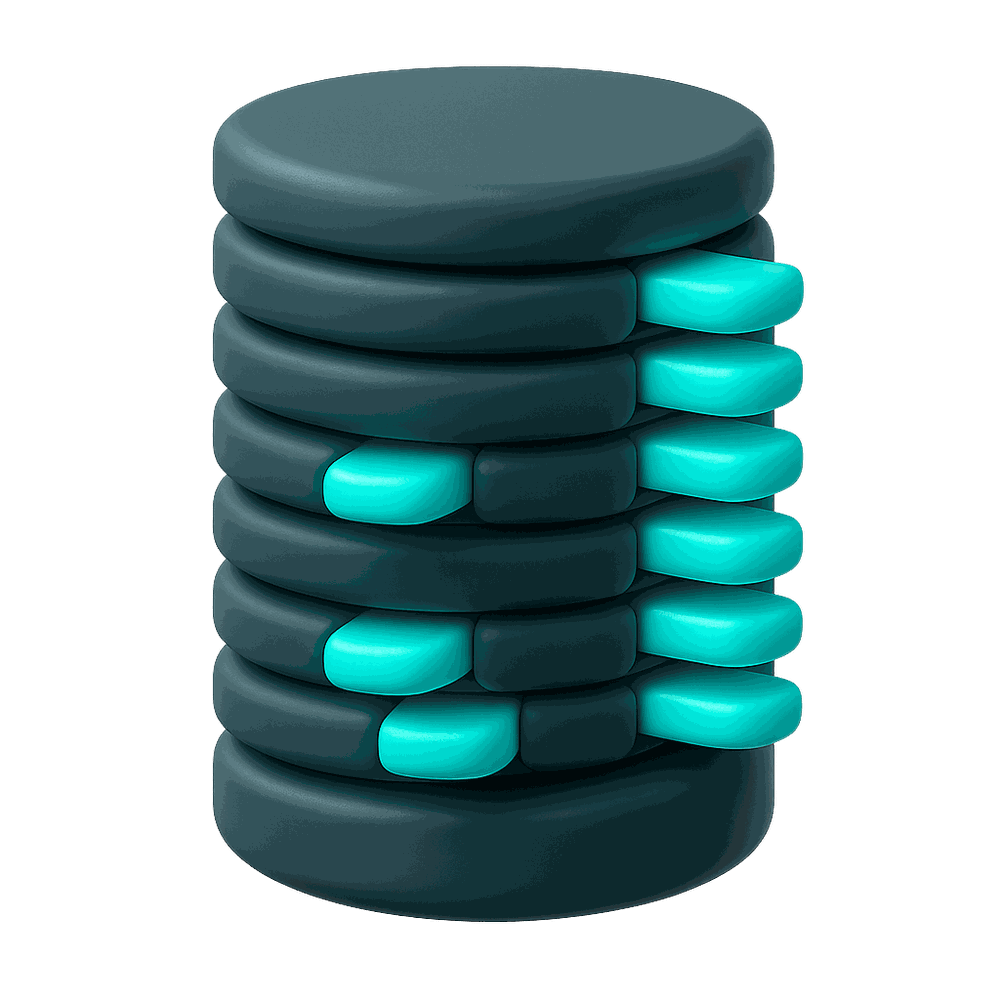
And here's the part people miss. Most of what I write down is what not to do.
My skills, my systems, my instructions, they're full of don'ts. That list is my failures, written down where the machine can read them.
A beginner can't fake that list. You only get it by breaking things first.
Even Anthropic writes it this way. “Don't add features beyond what was asked for.” “Don't add error handling for scenarios that can't happen.”
All of this has a name. Context engineering.
Lesson 04AI isn't the valuable part
Most of what I write down is what not to do.
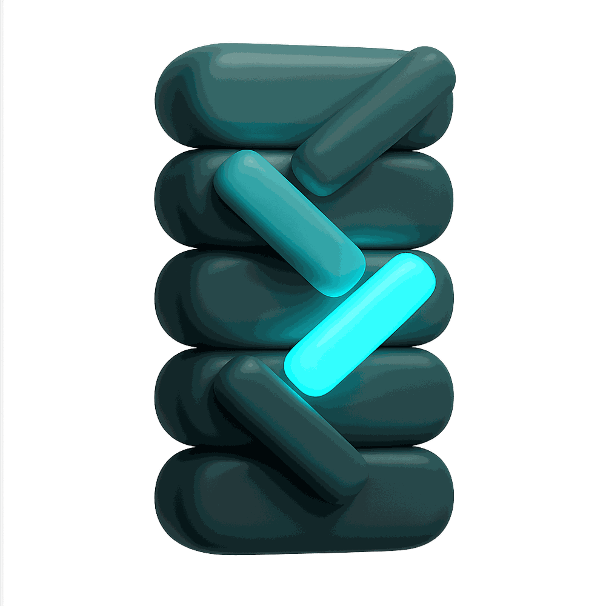
So here's my definition.
We're all running the same model, inside the same app. Context engineering is everything you put in around it.
Your knowledge. Your prompts. Your instructions. Your skills. The system you build around it.
It's how you press your own brain onto a very powerful, very generic machine.
Bridge: so if context is the work, how do you actually run it day to day?
Lesson 04AI isn't the valuable part
Context engineering is everything you put in around the model.
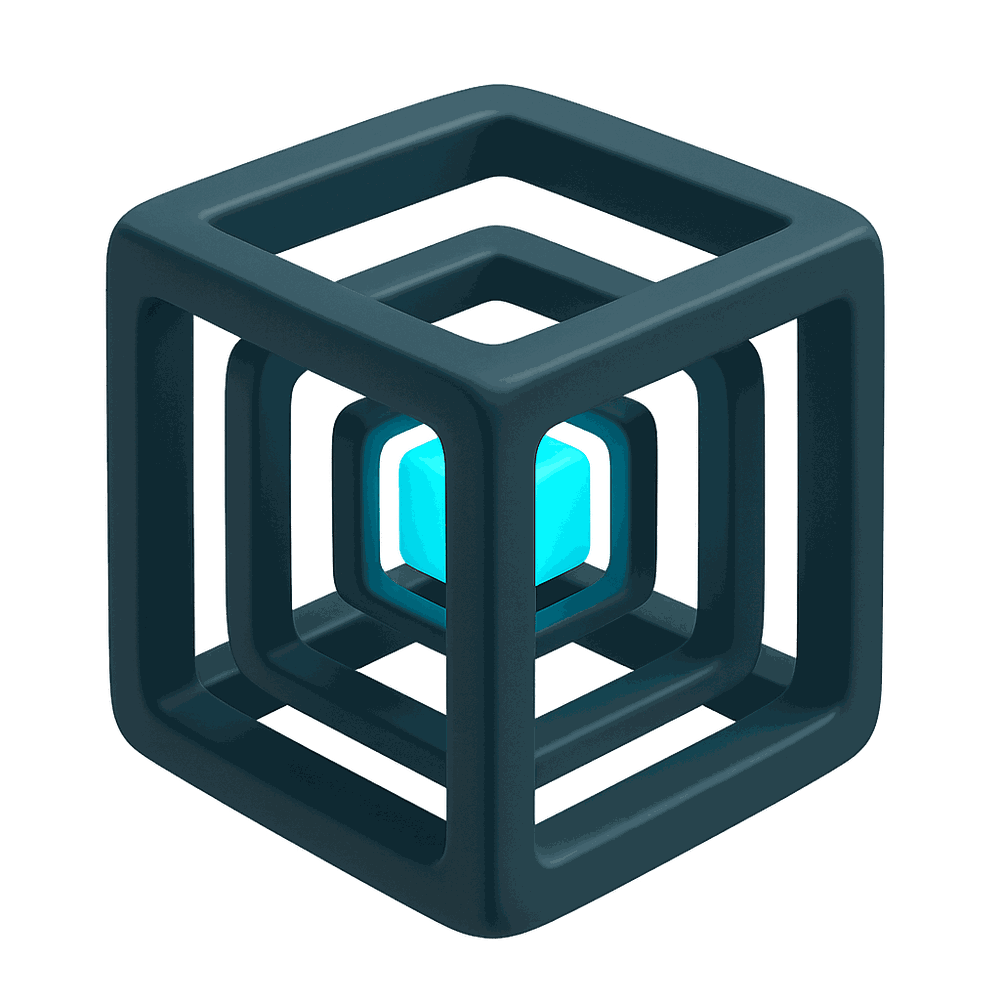
Lesson five. Stop talking to it. Start managing it.
Most people type a request, get an output, feel let down, and decide the model isn't smart enough.
I hand it a problem instead. “I want to increase revenue for my business.” Then I make it tell me how it would go about that, and I make it ask me questions until I'm sure it understood what I meant.
If it hasn't asked you anything, it doesn't understand the problem yet.
Lesson 05Managing
Stop talking to it. Start managing it.
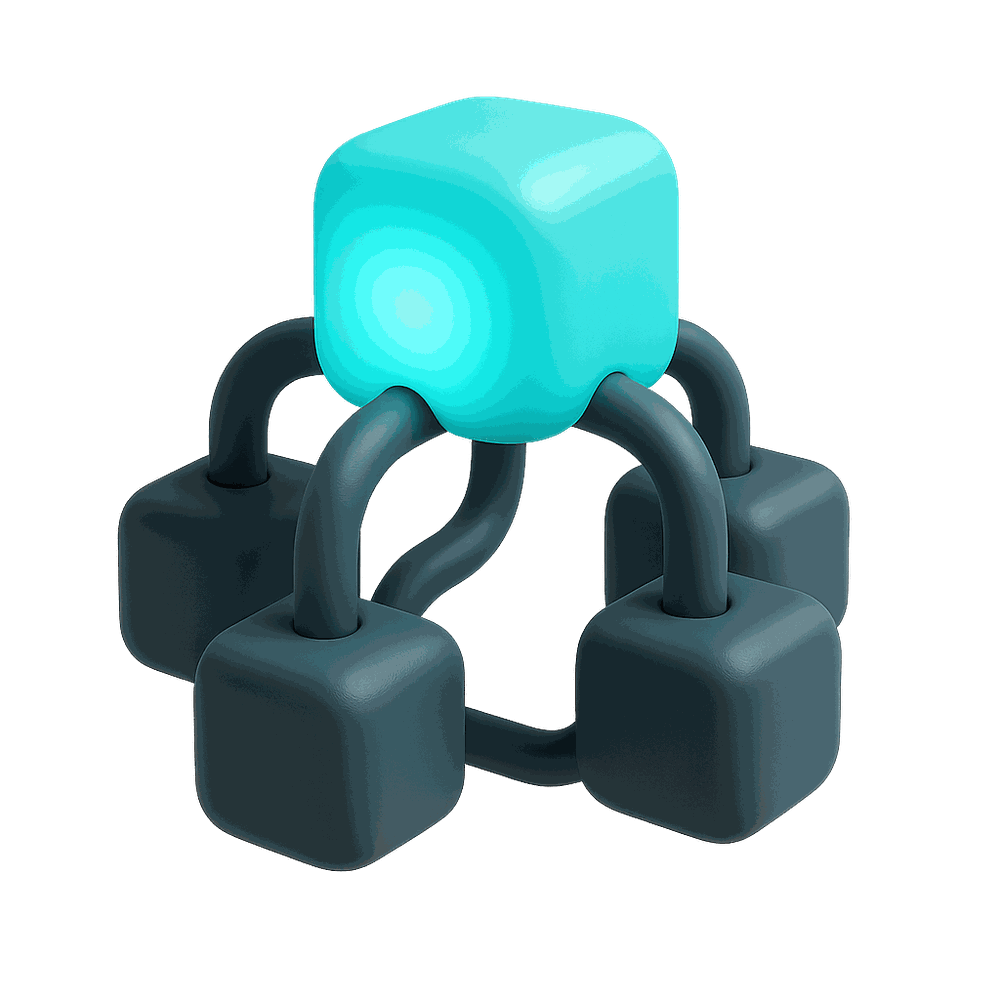
Now, one thing about these models. They're trained to please you.
Ask what it thinks of your plan and it'll tell you the plan is great. Every plan has blind spots, and this one will agree with all of yours.
So, two moves.
First, the pre-mortem. I tell it the plan already failed. Nothing else. Then it works out every reason why.
Second, the red team. Same plan, past a skeptical customer, a competitor, an engineer. Each one finds a different hole.
Lesson 05Managing
It is trained to please you.
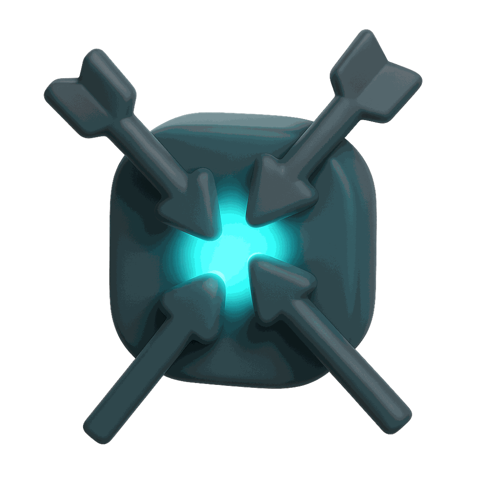
Last piece of lesson five. Give it a finish line.
Not a prompt. A goal, plus the condition that tells it to stop.
“Build a production-ready onboarding flow. Done means design and engineering could pick it up tomorrow and build it.”
Then it keeps going until that's true.
And once you can do that, you can delegate. One session for ideas, one for building, one for verifying. Each with its own finish line.
It becomes an employee that can hire its own staff. And it's only ever as good as you are at managing it.
Lesson 05Managing
Give it a finish line.
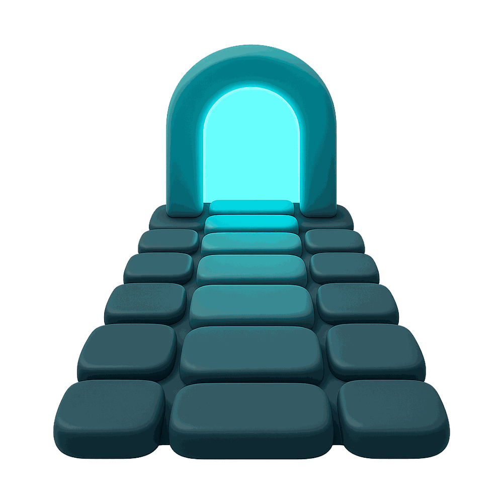
Lesson six. If you're building agents, this is the one that matters most.
You ask for done. You get seventy percent.
So you give feedback, it fixes one thing. More feedback, it fixes another. You claw your way to ninety like that, one round at a time.
Ask them: sino dito na ganito? How many of you have gone back and forth like this?
So here's the question. What if it checked its own work, and kept checking, until it was actually done and could show you why it was confident?
Lesson 06Verify everything
You ask for done. You get seventy percent.
And the setup for this is simpler than you think.
Just ask yourself what you would do to check the work. Would you look at it? Would you test it? Would you run the signup yourself and see what happens?
Whatever that is, it can do it.
It can drive a browser. Run tests. Read its own output back. Look at the same thing from a few different angles and tell you where they disagree.
Beat. Let that land before you move.
Lesson 06Verify everything
Whatever you would do to check it, it can do.
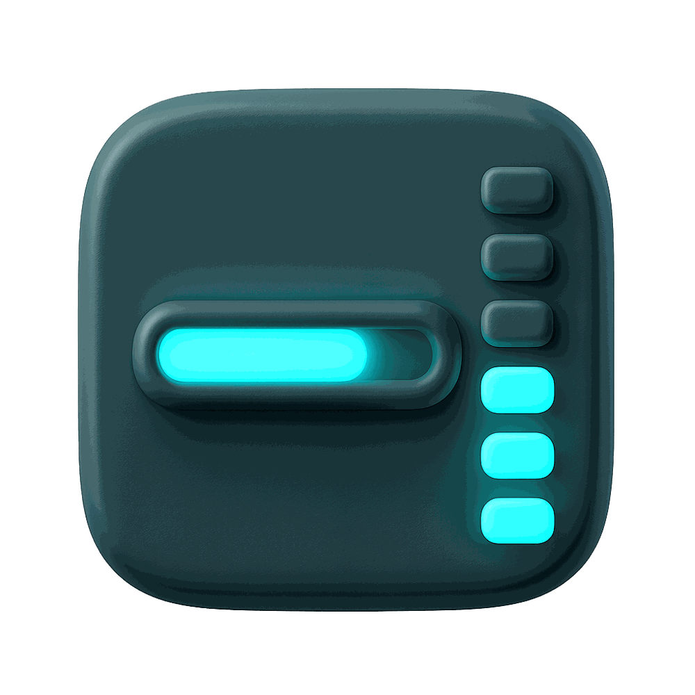
Here's how I actually do it. Every site I build goes through a screenshot loop.
It takes the screenshots and checks the balance itself. Checks it on mobile. Then it clicks every button, submits every form, and confirms the formatting held.
All the things I used to squint at myself.
So start making your AI verify the work you do. Make it prove to you that the work is complete.
Lesson 06Verify everything
Make it prove the work is done.
Lesson seven. Grant access carefully.
If it can reach something, assume it will eventually use it.
Handing an agent a tool and telling it not to touch that tool is like handing somebody a credit card and asking them not to spend. Beat. One day, they spend.
Lesson 07Grant access carefully
If it can reach something, assume it will eventually use it.
Let me show you why. You can tell it to only write drafts.
And it will write drafts. Then one day it sends one, because the send tool was sitting there the whole time.
There are two layers here. The prompt layer is where you write the rules. The model reads them and mostly follows them.
The tool layer is where you decide what it can physically do. Take the send tool away and it cannot send, whatever the prompt says.
So: a rule in the prompt is a suggestion. A rule in the tool is a restriction.
Lesson 07Grant access carefully
You can tell it to only write drafts.
And here's why a written rule only holds most of the time.
Run the same prompt a hundred times, you get a hundred results. Swap the model, it comes at the problem differently again.
Keys work the same way. Hand over your Google Workspace and it has your calendar. If it can create events, assume it will create events.
So go through every tool, every database, every file, every key. And ask one question about each. Can this thing send, or can it only draft?
Lesson 07Grant access carefully
Run the same prompt a hundred times, get a hundred results.
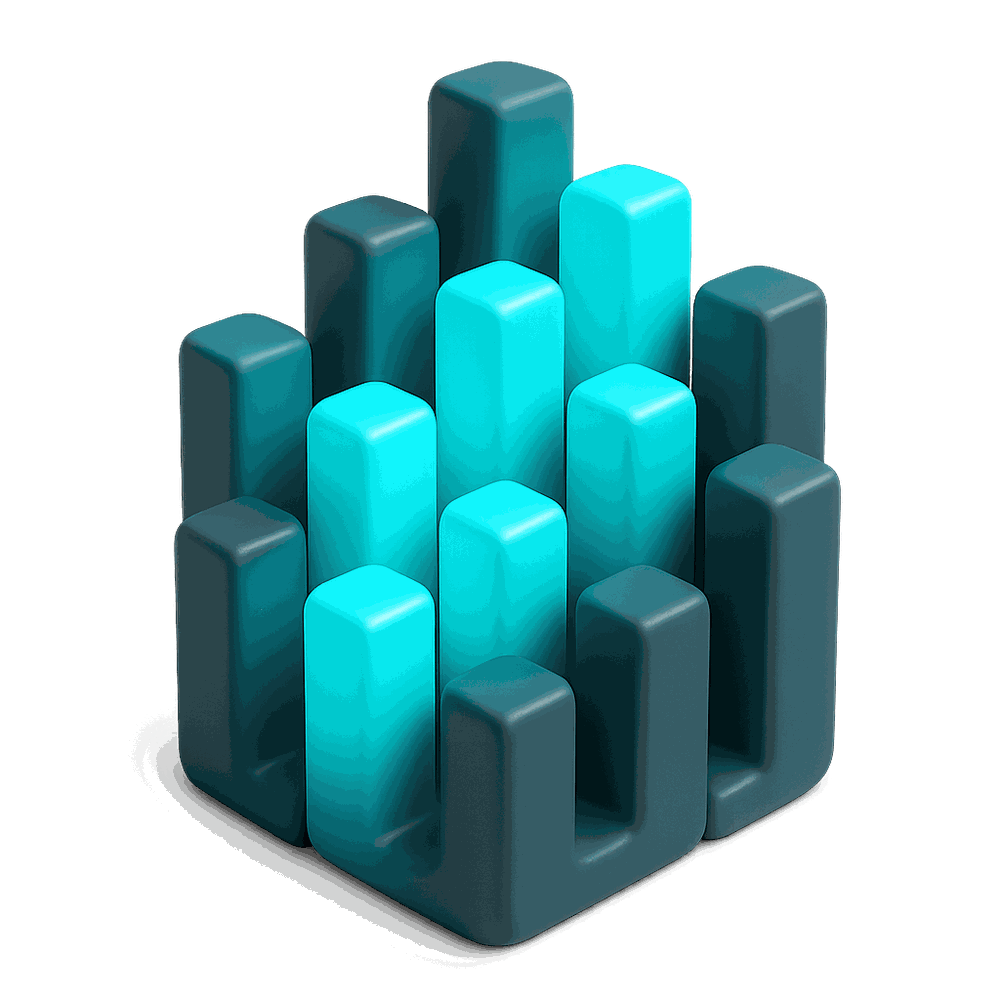
Lesson eight, and this one's short. One success is not proof.
Your agent worked. Okay. You've proven it worked one time, on one output.
These models are non-deterministic, so your real success rate is a range, and you haven't measured it yet.
The fix is evals. Run it many times against cases you already know the answer to, and score what comes back.
More on this next time.
Bridge: that is the thinking. Now let me show you what we are building.
Lesson 08One success is not proof
Your agent worked once.
Okay. That's the thinking. Now, what are we actually building?
An AI that knows your business, reaches your tools, does your repeatable work, and eventually moves before you ask.
We call it an AI Operating System. It lives in a folder on your laptop. You own it. You can open and read every file in it.
Part 2 · What we're building
An AI that knows your business, reaches your tools, does your repeatable work, and eventually moves before you ask.
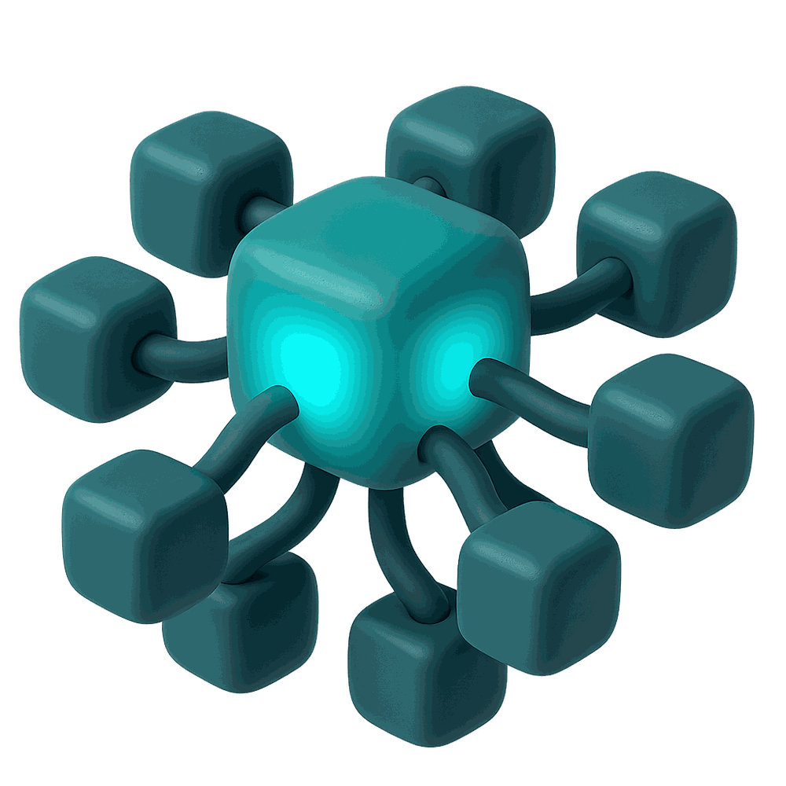
And here's the test I hold it to.
Read it slowly. While you're away from your desk, it notices one real event and produces something faster and more accurate than what you would have made yourself.
Everything we set up today is aimed at that one sentence.
Part 2 · What we're building
The test I hold it to
While you are away from your desk, it notices one real event and produces something faster and more accurate than what you would have made yourself.
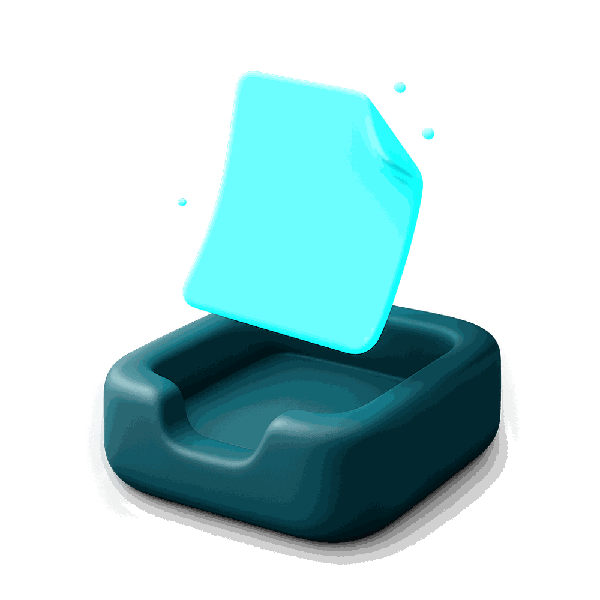
So how will you know it's working? Two signs.
First. Somebody asks you a question, and you go ask your AIOS too. Because you know it'll answer better, and show you where the answer came from.
Second. You stop trying to remember. What you decided last quarter. What the client said in that meeting. You start trusting the retrieval.
Part 2 · What we're building
How you'll know it's working
The first sign
You ask it too
The second
You stop trying to remember
Everything I just told you, I've compressed into two frameworks.
The Shift is how you think. That's lessons three and five, turned into a habit you can run on any task.
The Stack is what you build. That's lessons two and four, turned into an architecture you can score yourself against.
Learn The Shift first.
Part 3 · The two frameworks
Everything so far, compressed into two.
The Shift
How you think
The Stack
What you build
The Shift. Three moves.
Question. To what extent can AI do this? Faster is the bar. Better is a bonus.
Cut. Eliminate before you automate. If nobody would notice a task disappeared, kill it. Automating waste just gives you waste that runs faster.
Build. Context before tools. Small blocks, tested one at a time.
Part 3 · The Shift
Question · Cut · Build
The Stack. Five layers. And the easiest way to hold it is this. You're onboarding a hire.
Memory, it knows your business. Reach, it touches your tools. Skill, it knows how to do the work. Judgment, it knows what it may decide alone. Initiative, it moves before you ask.
That's exactly how you'd assess a new staff member.
Point back: Judgment is lesson seven. Same thing, now it has a name.
Part 3 · The Stack
You are onboarding a hire.
- 01MemoryIt knows your business
- 02ReachIt touches your tools and data
- 03SkillIt knows how to do the work
- 04JudgmentIt knows what it may decide alone
- 05InitiativeIt moves before you ask
And the order is the whole trick.
Memory first, always. Then Reach and Skill together.
But settle what it's allowed to do on its own before you let it run unwatched.
Reverse those two and you've handed a new hire the company card and gone on holiday.
Part 3 · The Stack
The order is the whole trick.
Okay. Everything you need is on one page.
post205.com/aios. Three downloads, in order, numbered.
One, VS Code. Two, the Claude Code extension inside it. Three, clone the starter.
Stay on this slide. Walk the room. Do not move on until everyone has all three.
Part 4 · Setting it up
Everything you need is here.
- STEP 01
VS Code
- STEP 02
Claude Code
- STEP 03
The starter
Once you're in, Day 1 is one word. Slash onboard.
Seven questions, about fifteen minutes. Answer them out loud if that's easier.
At the end it writes your files, and it knows who you are.
It'll ask who you are and what you sell. How you write. Your next 90 days. Where the money lands. Where you talk to people. Where the files live. And what eats your week.
Part 4 · Setting it up
Day 1 is one word.
/onboard
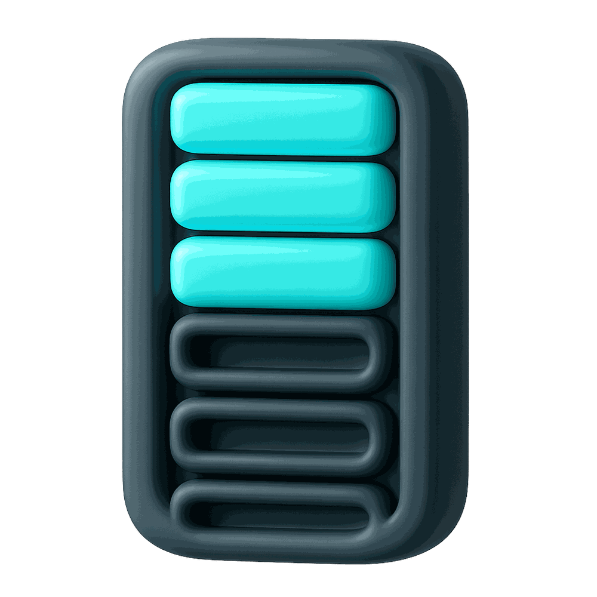
And there's one rule I will not bend.
When it asks for two things you've written, open a real email and paste it raw. Typos included.
Because anything you compose inside the chat is already shaped by the chat. Type it fresh and you teach it a voice that isn't yours.
Say this twice. This is the one they break.
Part 4 · Setting it up
The one rule I will not bend
Paste your writing. Do not type it.
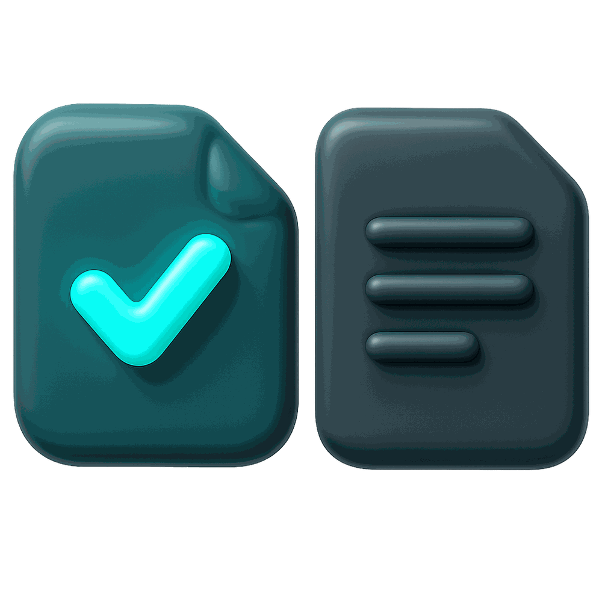
After that, it's a weekly habit.
Week 1, just use it. Real questions, real decisions.
Day 7, run audit. It scores you out of 100 and names your biggest gap. Expect a low first score — most honest setups start in the twenties.
Day 14, level up. It finds one task worth automating and ships it with you.
Then every Friday. One shipped thing a week.
Point back: this is the same audit and level-up loop from lesson four, now running on their machine.
Part 5 · Keeping it alive
Then it is a weekly habit.
- Day 1/onboardIt learns who you are and how you sound.
- Week 1use itReal questions, real decisions.
- Day 7/auditScores the five layers, names your biggest gap.
- Day 14/level-upShips one automation with you.
- Fridays/level-upOne shipped thing a week.
So here's what I'd leave you with.
Pick one small piece of your week and automate that. Next week, pick another.
Kunin mo yung isa. Yung pinakamaliit. Start there.
Clone it, make it yours, and let it learn how you work.
Everything's at post205.com/aios.
Leave this on screen while they work.
Close
Pick one small piece of your week.
Clone it, make it yours, and let it learn how you work.
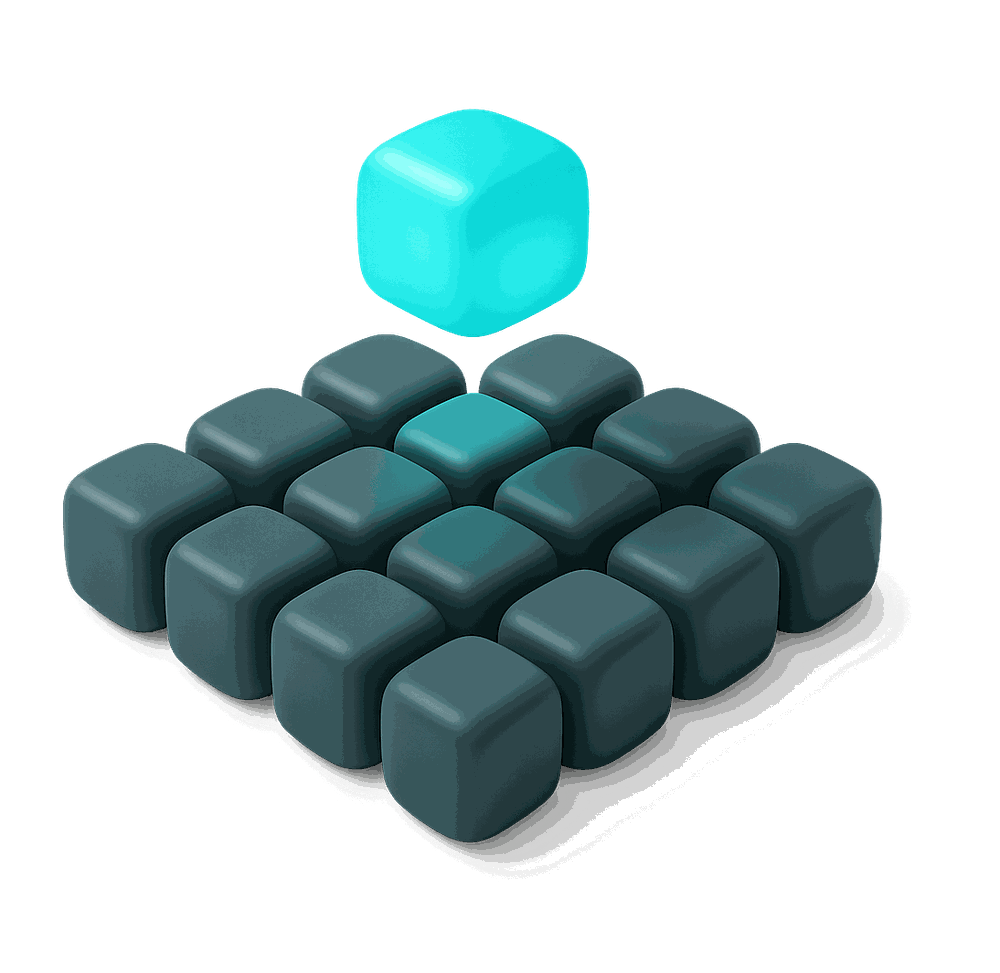